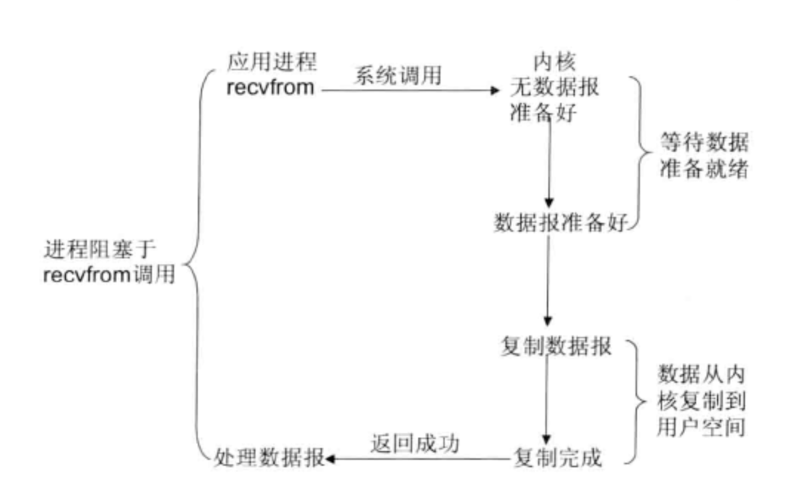
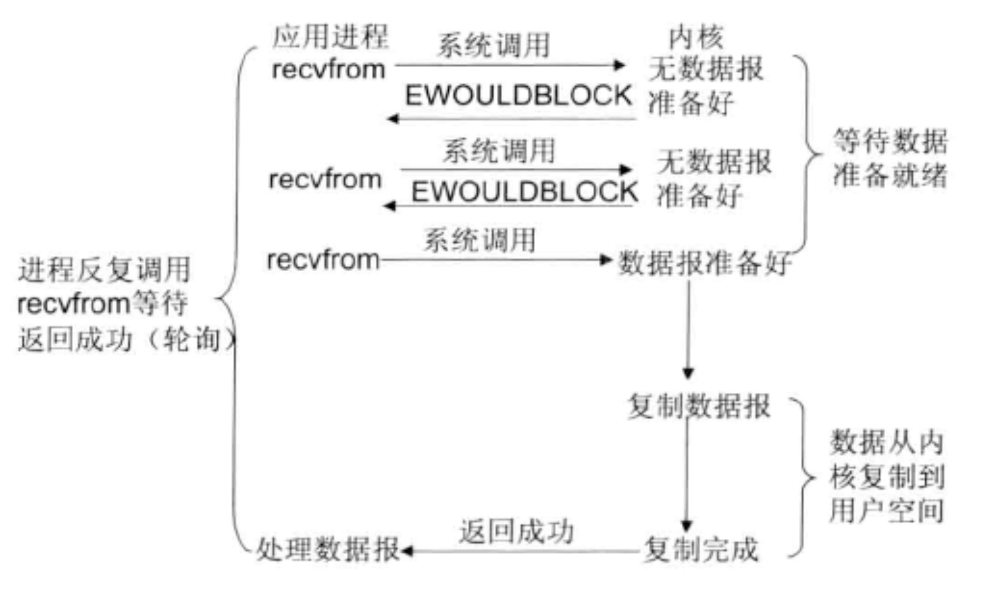
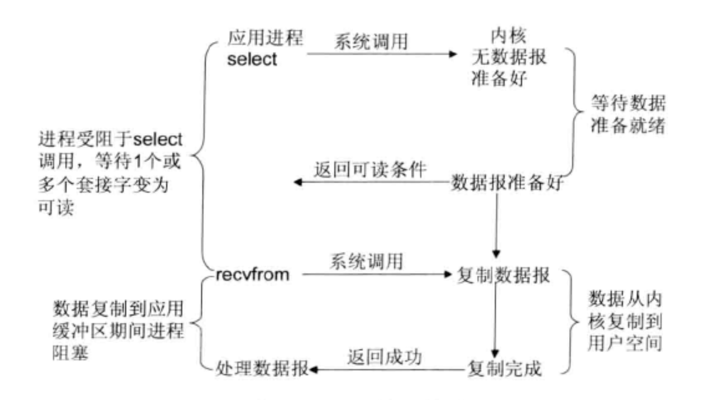
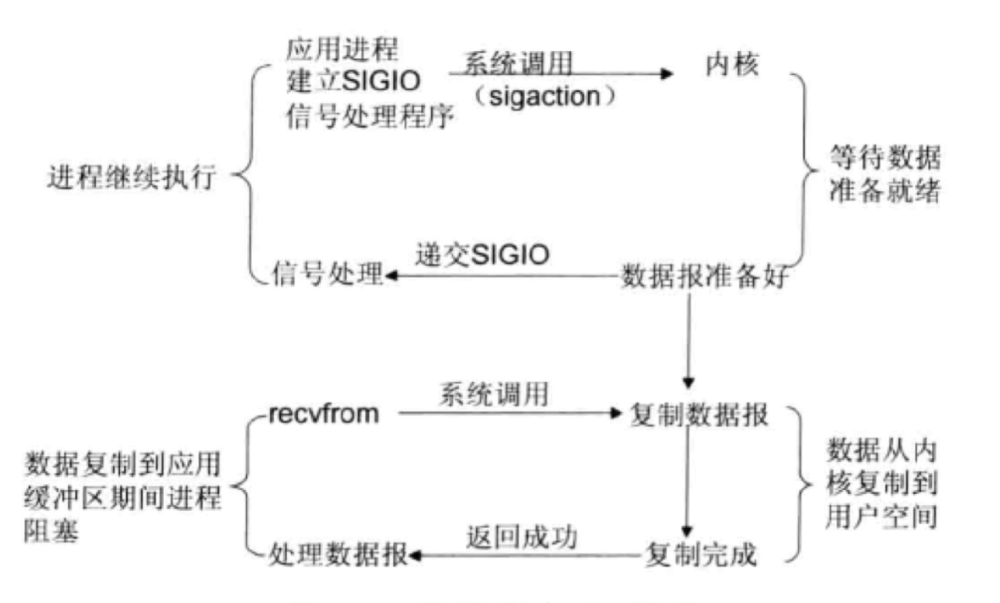
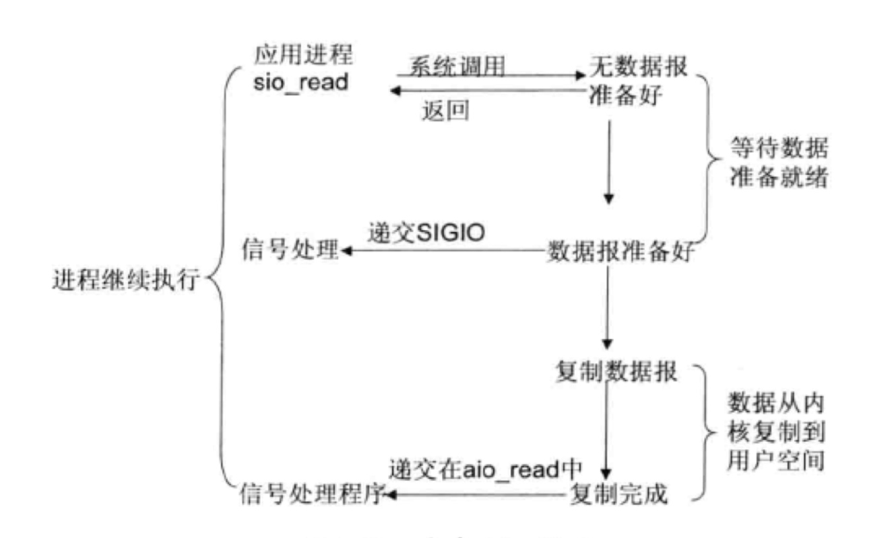
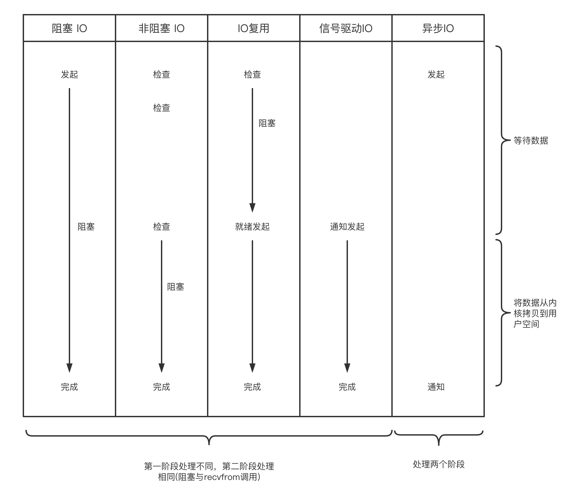

首先需要搞清楚什么是同步和异步、阻塞与非阻塞
同步：调用方需要主动等待结果的返回。
异步： 不需要主动等待结果返回，而是通过其他手段获取结果，比如状态通知、回调函数等。
- 阻塞和非阻塞： 主要关注的是等待结果返回调用方的状态
阻塞：结果返回之前，当前线程被挂起，不做任何事。
非阻塞：结果在返回之前，线程可以做一些其它事情，不会被挂起。
linux 五种I/O 模型
- 阻塞 I/O，同步的
- 非阻塞 I/O，同步的
- I/O 复用，同步的
- 信号驱动 I/O ，同步的
- 异步 I/O ，异步的
阻塞 I/O

应用程序调用一个 IO 函数，导致应用程序阻塞，等待数据准备好。 如果数 据没有准备好，一直等待，数据准备好之后，从内核拷贝到用户空间,IO 函数返回 成功指示。
非阻塞 I/O 模型(不推荐使用，占用大量CPU时间)

一个 SOCKET 接口设置为非阻塞就是告诉内核，当所请求的 I/O 操作 无法完成时，不要将进程睡眠，而是返回一个错误。这样我们的 I/O 操作函数将 不断的测试数据是否已经准备好，如果没有准备好，继续测试，直到数据准备好为止。在这个不断测试的过程中，会大量的占用 CPU 的时间。上述模型绝不被推荐。
IO 多路复用模型

Linux提供 select/poll,进程通过件事一个或多个fd(描述符) ，并将 fd 传递给 select 或poll 系统调用, 阻塞在 select 操作上,这样 select/poll 可以帮我们监视多个 fd 是否处于就绪状态。
select/poll 是顺序扫描 fd 是否就绪, 而且支持的 fd 数量有限,因此它的使用受到了一些制约。
Linux还提供了一个 epoll 系统调用, epoll 使用基于事件驱动方式代替顺序扫描,因此性能更高。当有 fd 就绪时,立即回调函数 rollback。
信号驱动 I/O

首先开启套接口信号驱动I/O功能,并通过系统调用 sigaction 执行一个信号处理函数(此系统调用立即返回,进程继续工作,它是非阻塞的)。当数据准备就绪时,就为该进程生成一个 SIGIO信号,通过信号回调通知应用程序调用 recvfrom 来读取数据,并通知主循环函数处理数据,如图1-4所示。
异步I/O

告知内核启动某个操作,并让内核在整个操作完成后(包括将数据从内核复制到用户自己的缓冲区)通知我们。这种模型与信号驱动模型的主要区别是:信号驱动1O由内核通知我们何时可以开始一个1/O操作;异步1O模型由内核通知我们1(O 操作何时已经完成
五种 IO 模型的比较

多路复用 IO
select，poll，epoll 都是 操作系统实现 IO 多路复用的机制。 我们知道，I/O 多路复用 就通过一种机制，可以监视多个描述符，一旦某个描述符就绪(一般是读就绪或者写就绪)， 能够通知程序进行相应的读写操作，那么select、poll、epoll 的区别有哪些呢？
| 操作 |
描述符限制 |
IO效率 |
消息传递方式 |
| select |
单个进程所能打开的最大连接数有 FD_SETSIZE 宏定义，其大小是 32 个整数的大小(在 32 位的机器上，大小就是 1024，同理 64 位机器上 FD_SETSIZE 为 2048)，当然我们可以对进行修改，然后重新编译内核， 但是性能可能会受到影响。 |
因为每次调用时都会对连接进行线性遍历，所以随着 FD 的增加会造 成遍历速度慢的“线性下降性能问题” |
内核需要将消息传递到用户空间，都需要内核考贝动作 |
| poll |
poll 本质上和 select 没有区别，但是它没有最大连接数的限制，原因是它是基于链表来存储的 |
同上 |
同上 |
| epoll |
它所支持的FD上限是操作系统的最大文件句柄数，远远大于1024，可通过 cat/proc/sys/fs/file -max 查看，这个数可系统内存关系比较大 |
epoll 只会对活跃的socket进行操作，epoll会根据每个fd上的回调函数实现。如果所有的socket处于活跃状态，则epoll的效率并不比select/poll效率高多少，在活跃socket比较少的情况下，epoll效率不成为题 |
epoll 通过内核和用户空间共享一块内存 mmap 来实现 |
无论是 select、poll还是epol都需要内核把FD消息通知给用户空间,如何避免不必要的内存复制就显得非常重要，epoll 通过内核和用户空间共享一块内存mmap来避免不必要的内存复制。
在选择 select，poll，epoll 时要根据具体的使用场合以及这三种方式的自身特点。
表面上看 epoll 的性能最好，但是在连接数少并且连接都十分活跃的情况下，select 和 poll 的性能可能比 epoll 好，毕竟 epoll 的通知机制需要很多函数回调。表面上看 epoll 的性能最好，但是在连接数少并且连接都十分活跃的情况下，select 和 poll 的性能可能比 epoll 好，毕竟 epoll 的通知机制需要很多函数回调。
select 低效是因为每次它都需要轮询。但低效也是相对的，视情况而定，也可通过良好的设计改善